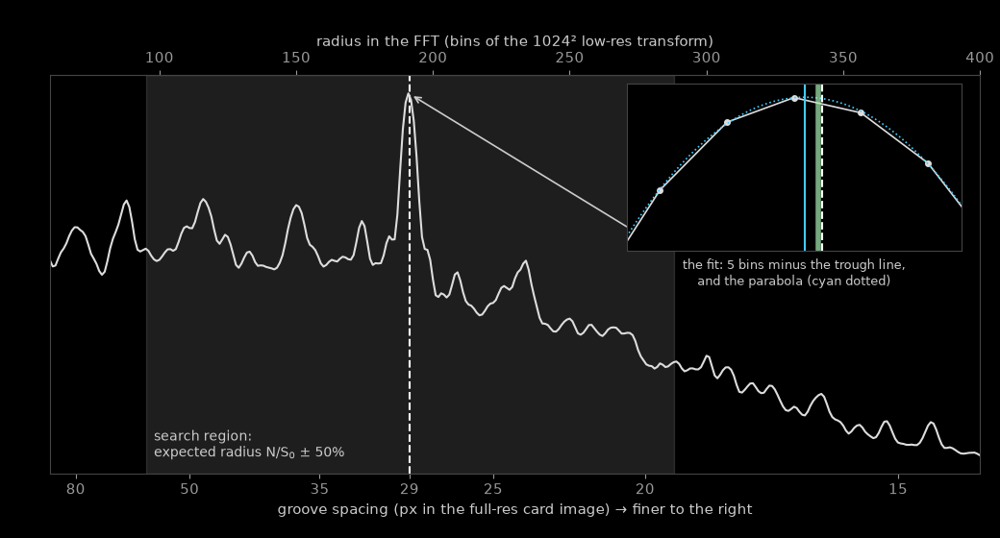
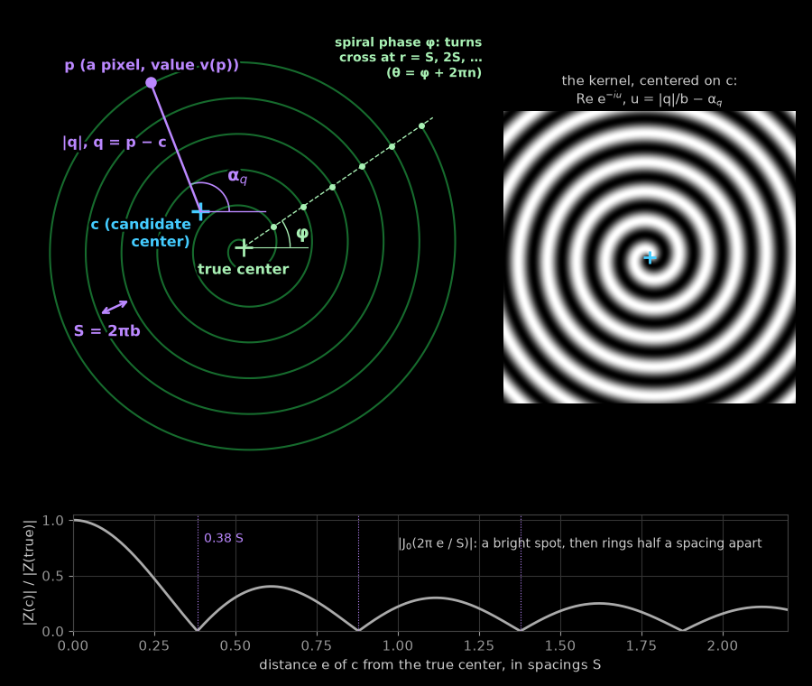
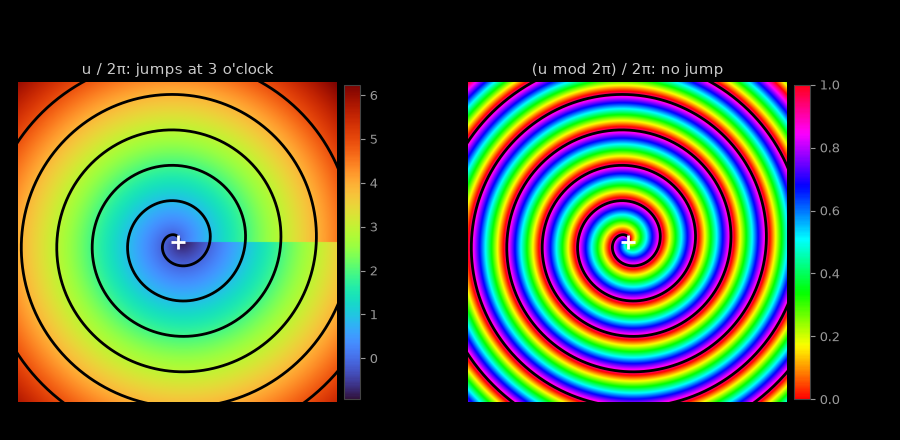
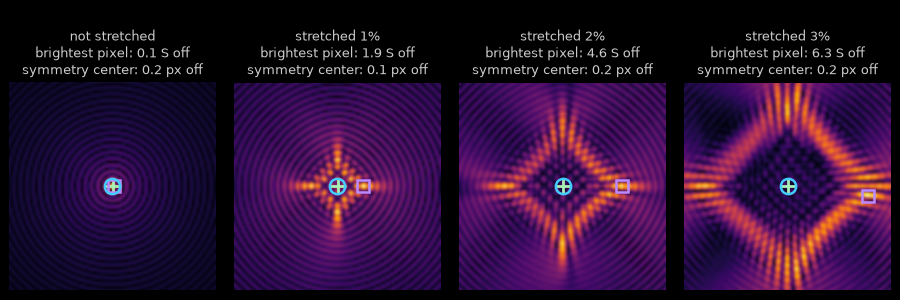
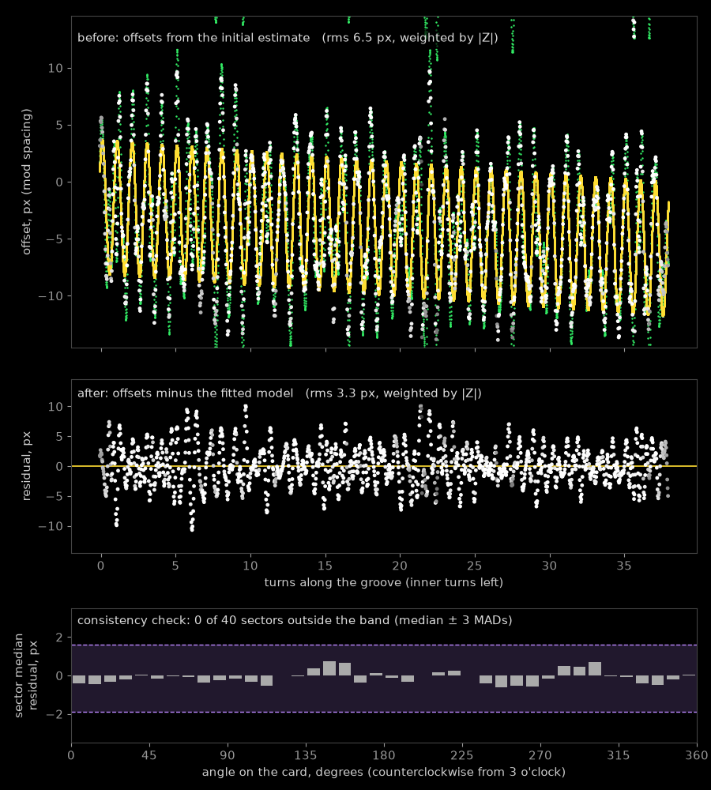
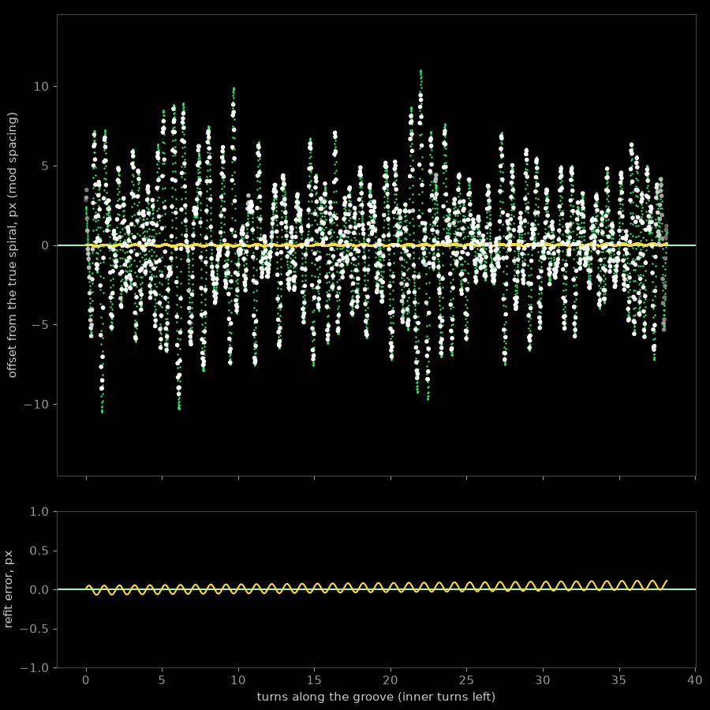
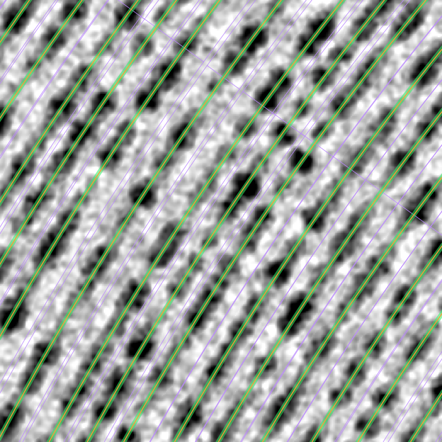

How we recover the sound from a scanned sonorine card, step by step. This page
describes the method; card.html runs it on simulated cards and shows
every step's result and how well it works; considered.html
collects the alternatives we tried and dropped, and the methods of the two earlier
experiment pages (spacing, center).
Code: cardlab/ (Python); source:
github.com/adamfinkelstein/spiral.
Colors, in every figure here and in card.html: white input (hand mark, nominal spacing) · cyan low-res estimates · yellow the corrected geometry (step 4) · orange the path and the sound read out · green the true groove and true sound · pale green the true geometry · magenta wrong groove · grey raw measurements (the wedges) · violet annotations (rows, wedge edges, labels). The figures are from card.html's showcase card (preset typical, seed 1).
The card. A height map of the card (from photometric stereo: aligned scans → normals → depth), 5551² px. The groove is an Archimedean spiral, r = b(θ − φ) with b = S/2π (S, the spacing, ~29 px; θ the angle about the center, unwrapped; step 3), plus a small drift; about 40 turns between r ≈ 1600 and 2770 px.
Given by hand or by the device: a hand mark of the groove's annulus (center, inner and outer radius; tens of px off is fine, since the center is found again in step 3), the nominal spacing S0 (the recording device's spec; the true spacing must be within ~0.67–1.33 × of it, step 2), and the spiral's winding sense.
Low-res copy. Steps 1–3 run on the height map averaged down to 1024² (each low-res pixel the mean of ~5.4² full-res ones; cv2.INTER_AREA), where S ≈ 5.4 px. It is multiplied by a soft annulus mask from the hand mark (smoothstep ramps one spacing wide, inside the marked circles), its mean inside the mask is removed, and it is scaled to unit rms.
Simulated cards. Until we run on real scans, the input is an
idealized card (cardlab/model.py): flat at height 0 plus paper grain
(white noise blurred to the measured grain size), the groove cut by a round
stylus (a parabola, 0.6 S wide at nominal depth) along the spiral plus a
drift (3.2 px rms, periods 0.3–1 turn, so neighbouring turns drift
independently). The stylus moves up and down with the sound: cut depth =
D0(1 + a(θ)), the sound a(θ) 0.4 rms, a function of the angle since
the card turns at a constant rate (wavelengths 15–300 px of groove at the mid
radius). A deeper cut is also wider; where a < −1 the stylus leaves the card
and nothing is cut (0.5% of the groove). The hand mark is the truth plus
noise. Presets: typical, loud (sound 0.7 rms), hard (grain doubled,
drift 5 px, sound 0.6, worse hand mark), clean (no grain), ezra
(like Ezra's card: sound 0.3 rms of which 8% of the power is a tone at 195
cycles per turn, a nominal depth 10% shallower on the outer turns than on the
inner, drift 1.9 px, annulus 1200–2750 px, ~53 turns).
Matched to the real card Measured on sonorine_001 (Tomaz's images 21–22, 26): spacing 29.0 px; grain rms 0.52 × the groove's rms (2.6 vs. 5.0), grain cells ~3 px; the groove's offset from a fitted spiral 2.9–3.5 px rms per turn, uncorrelated from one turn to the next, changing only ~1.5 px along 0.1 turn; annulus r ≈ 1600–2770 px. Assumed: the groove's width and shape, the sound's level and spectrum, the hand-mark error. card.html lists every parameter with its source.
Winding: real cards spiral outward counterclockwise as displayed (Tomaz's
sonorine_001 and Ezra's card, data/cards/: the coherence map of
step 3 with both winding senses, 89.7 vs 11.1 and 40.2 vs 25.3 at the center
relative to the map's median; experiments/ezra_card/). All
angles here, in the code and in the figures, are measured counterclockwise
from 3 o'clock as displayed, so the simulated cards wind the same way.
Ezra's card (see its README) gave the ezra preset: relative depth
modulation 0.29 rms read out; a narrow peak at 195 cycles per turn holding
7–8% of the sound's power above its background (modeled as a pure sine,
though the real peak is ~10 cycles per turn wide); mean depth per turn 25.5
→ 22.6 from the inner to the outer turns (−11%); drift 0.064 S;
inner/outer radius 0.42 and 52.5 turns (the preset keeps the outer radius and
the mid radius in spacings, 68 S: ratio 0.44, 53 turns). Otherwise the spectrum
matches the typical card's (most power at 100–400 cycles per turn). Left
out: Ezra's power below 50 cycles per turn, probably shading in the rendering,
not sound. Read out the same way, the ezra cards' sound is 0.39 rms (unsmoothed;
0.33 after step 6's smoothing) for a true 0.30, still louder than Ezra's 0.29: the
grain adds to it, and Ezra's card looks cleaner (coherence 0.75 vs. 0.64–0.69).
The goal of steps 1–3. The card carries one spiral groove, and before we can follow it we need the spiral's parameters: its spacing S (how far apart neighbouring turns are), its center c0, and its spiral phase φ (how it is turned, step 3). This step and the next find the spacing, from the Fourier transform; knowing the spacing then lets step 3 find the center and spiral phase.
How a spiral shows up in the FFT. Neighbouring turns are S px apart in every direction, like a set of concentric rings. In the 2D Fourier transform (an N×N image, here N = 512) a pattern that repeats every S px gives a bright ring at radius ρ1 = N/S from the center (zero frequency), and, because each turn is a narrow line rather than a smooth wave, fainter rings at its multiples 2ρ1, 3ρ1, …. Averaging the transform over each radius (the radial profile, step 2) turns those rings into peaks. A larger spacing puts the rings closer to the center:

procedure/make_fft_examples.py.Weighting the turns. On a card, each turn counts in the transform in proportion to its length, so the outer turns would dominate. The magnitude spectrum can't tell inner from outer turns, so the weighting is done in the image, before the transform, about the hand-marked center: each pixel of the low-res card (step 0) times
w(r) = 1/√r, normalized so the weights sum to 1 over the 1024² frame
r is the distance from the hand-marked center and S0 the nominal spacing, both in low-res px (S0 ≈ 5.35). For r < 2S0 the weight is set to 0 (there are no turns there, and it keeps the weight finite near r = 0). On a card this never matters: the mask's inner circle (~295 low-res px) already zeroes everything far beyond 2S0; it only matters for the synthetic spirals of the spacing page, which can start near the center.
Neither the units nor the normalization matter: changing them multiplies every weight by the same constant, which only shifts the log spectrum below by a constant; what counts is the ratio between radii (a pixel at 2770 px weighs √(1600/2770) ≈ 0.76 of one at 1600 px).
The transform. The mean inside the mask is removed again, so the frame outside stays exactly 0, and the 1024² FFT is taken with the soft annulus mask as its only window. Then
L(u,v) = log(|F(u,v)| + ε), ε = 10−12
The log makes the profile scale-free (a constant factor on the image only shifts it), and ε only guards against exact zeros: with the weights summing to 1, |F| is at least ~10−7 on the cards. On a card (N = 1024, S ≈ 5.35 low-res px) the groove's ring is at ρ1 ≈ 190.

Tested Weighting, on drawn spirals with varying local spacing: 1/√r kept the median spacing error close to no weighting and cut the worst cases about 3×; 1/r over-weights the short inner turns. A Hann window on top of the mask starved the outer turns: over 40 cards, the spacing rms error 0.071% with it, 0.046% without, the peak 11 → 8 bins wide.
log(|F| + ε) with weights summing to 1 vs. log(1 + |F|) with weights averaging 1 (until Nov 2026): the same spacing to 10−5 px and the prominence within 0.002 (typical, hard, clean cards). log(1 + |F|) with weights summing to 1 fails: |F| ≪ 1, so the log becomes a plain magnitude and the peak's prominence drops to 0.003, below step 2's threshold.
Radial profile. Each FFT pixel goes to the bin round(distance from zero frequency), and each bin is averaged:
P(ρ) = mean of L(u,v) over round(√(u²+v²)) = ρ
then smoothed by a Gaussian of σ = 1 bin (removes speckle and the fringes from the annulus edges).
Search window. The peak is searched within 0.5–1.5 × the radius the nominal spacing predicts, ρ0 = N/S0: from halfway to zero frequency to halfway to the second harmonic. If the true peak is at f·ρ0, the fundamental is inside for 0.5 < f < 1.5 and the second harmonic outside for f > 0.75, so for any true spacing within ~0.67–1.33 × the nominal only the fundamental fits (three times the ±11% spread over Tomaz's five cards).
Below a bin. The peak sits on a falling background, which would pull a plain parabola toward smaller radii (larger spacings). So a line through the smoothed profile at the halfway troughs, 0.5ρi and 1.5ρi, is subtracted from the 5 bins around the peak bin ρi, and the vertex of a least-squares parabola through them gives ρ*. Spacing S = N/ρ*.
Or fail. If the maximum is on the window's edge, or stands less than
twice above its background (its height above that trough line, in log
magnitude, under ln 2), there is no reliable spacing: the card fails
(SpacingNotFound) rather than fall back to the nominal, which can be
~33% off across machines, far outside what the later steps survive.

Tested
On 20 cards the FFT spacing is within 0.09% (typical) and 0.15% (hard) of the
truth. Error budget (experiments/spacing_budget.py, the spacing forced
off by a known amount): within ±1% nothing downstream changes; at ±2–3% the
step-3 center is several px off and the path degrades, though step 4 still
recovers the geometry; at ±5–10% cards fail. So the spacing needs to be
reliable more than precise.
Profile smoothing 1 / 1.5 / 2 bins: 0.024 / 0.023 / 0.020% median on 26
cards, and 1 bin best or tied on the drawn spirals; 1 bin chosen as the round
value (it was 1.5 until Nov 2026). Removing the trough line: 0.049 → 0.023%
median on cards. Prominence: correct peaks 0.89–1.91 on cards, wrong ones
(nominal far off) at most 0.41, so ln 2 ≈ 0.69 sits in the gap
(experiments/spacing_prominence.py, spacing_window.py).
Step 2 gave the spacing S, so b = S/2π (the radius grows by b per radian). What is left of the spiral is its center c0 and its spiral phase φ: about c0 the groove lies on
r = b(θ − φ)
where θ is the angle about c0, measured counterclockwise from 3 o'clock as displayed (as are φ and αq below) and unwrapped: it keeps growing along the groove, by 2π per turn, so θ = α + 2πn with α the angle in [0, 2π) and n the turn (counted from the center). Steps 4–6 use θ to index the groove; it is also time, since the card turns at a constant rate.
φ says how the spiral is turned. It is defined so that on the ray at angle φ the turns, continued inward, cross at whole multiples of the spacing, r = nS (and the spiral, continued all the way in, leaves the center in direction φ). It is not where the cut groove starts: the groove starts wherever the recording began, e.g. at the inner radius 55.16 S on the typical test card, which lies on the ray at angle φ + 1.0 rad. On the ray at angle φ + 2πf the turns cross at r = (n + f)S: turning by a fraction f of a turn moves them out by the same fraction of a spacing. φ is an angle, defined modulo 2π: φ + 2π gives the same turns (n becomes n + 1). Step 3 reports it as the angle of a complex number, in (−π, π]; step 4's correction may move it outside that range, which changes nothing.

What Z is. Take a candidate center c, and write each pixel p relative to it: q = p − c, at distance |q| and angle αq from c (the angle of q, as α is the angle about c0). Give the pixel the spiral coordinate
u = |q|/b − αq
(a real number, in radians; u/2π counts turns). u is defined at every pixel, not just on the groove: the groove's turns are where u = 2πn − φ, and between them u takes every value in between. If c is the true center, u is constant along the groove within each turn and changes smoothly across the turns:
So u says where p sits across the turns, like a radius measured in turns along the spiral. Where a turn ends: αq is taken in [0, 2π), measured counterclockwise from 3 o'clock like α and φ, so it wraps from 2π back to 0 on the ray pointing right from c (3 o'clock), and there u jumps up by 2π. Following the groove across that ray, n becomes n + 1, so over several turns u is a staircase; around a circle it is a sawtooth, jumping back up where it crosses that ray. Each turn is the stretch of groove between two crossings of the ray. e−iu, all that is used below, doesn't notice the jump: it depends only on u mod 2π, which is continuous everywhere except at c itself. (The code takes the angle in (−π, π] instead; e−iu is the same.)
u and θ. On the groove, about the true center, |q| = r = b(θ − φ) and αq = α, the angle within the turn (θ = α + 2πn), so
u = θ − φ − α = 2πn − φ
u is θ with the angle within the turn taken off: it keeps only the turn count n (less φ), while θ − φ = r/b = u + αq rises steadily. Along the groove u is a staircase and r/S a ramp (middle panel below); both turn over at 3 o'clock, where α wraps and n goes up by one. u's reference is fixed, so u can be computed for any candidate center without knowing φ, and the angle of Z then gives φ. Once the center and spiral phase are known (at the end of this step), steps 4–6 index the groove by θ.


Complex exponentials. Z is built on Euler's formula,
eix = cos x + i sin x
a unit arrow at angle x in the complex plane. Two facts about these arrows do all the work below. A cosine is two arrows turning opposite ways:
cos x = (eix + e−ix) / 2
And in a sum of many arrows, those that all point the same way add up, while those whose angles keep turning cancel. Multiplying by e−iu turns each pixel's arrow back by u, so whatever in the image follows the spiral ends up pointing one way, and everything else keeps turning.
So define
Z(c) = −∑p v(p) · e−iu
sums over all pixels of the masked low-res image v (step 0; zero outside the annulus), each pixel's height turned by the angle u: a single complex number per candidate c. Why it finds the spiral: about the true center, whatever the groove's shape, the height across the grooves has a once-per-spacing component v ≈ −A cos(u + φ), lowest on the groove (A > 0). Writing the cosine as two arrows, each pixel contributes
−v e−iu = (A/2)(ei(u+φ) + e−i(u+φ)) e−iu = (A/2)(eiφ + e−i(2u+φ))
The first arrow points at angle φ for every pixel and adds up; the second turns twice per spacing and cancels, as do the grain and every other component of the image (each keeps turning at its own rate). So
Z(c0) ≈ (N A / 2) eiφ
with N the number of annulus pixels: |Z| is largest at the true center, and the angle of Z is the spiral phase.
What J0 is. Move c away from the true center by a small distance e. A pixel at angle ψ from the direction of the move is then e·cos ψ closer to c, so its u changes by 2π(e/S) cos ψ, and the contributions no longer point the same way. Averaged over all directions ψ around the card, they add up to
(1/2π) ∫ ei x cos ψ dψ = J0(x), x = 2πe/S
(the same arrows again: each pixel's arrow is turned by its own shift, and the average over all directions is how much of them still points one way.) J0 is the Bessel function of the first kind of order 0: 1 at x = 0, falling to its first zero at x ≈ 2.405, then a decaying oscillation with zeros about π apart. So |Z(c)| ≈ |Z(c0)| · |J0(2πe/S)|: a bright spot out to e = 0.38 S around the true center, ringed by fainter rings half a spacing apart (the cartoon's bottom panel; the measured map is in card.html 3a).
All candidates at once. Z(c) is a correlation of the image with one fixed kernel, e−iu = e−i(|q|/b − αq) as a function of q (reaching the marked outer radius + 2 S), so one FFT correlation gives Z at every pixel of the frame (~0.5 s at 1024²). No search window: the hand mark only places the mask.
The kernel has no spiral phase. It is drawn with spiral phase 0 (its white turns cross the ray at angle 0 at r = S, 2S, …; in the cartoon they don't line up with the toy spiral, whose φ is 0.6 rad). None is needed: rotating a spiral wave by δ replaces u by u + δ, which only multiplies the whole kernel by the constant e−iδ. So every rotation gives the same |Z|, and only the angle of Z moves; the one complex number Z already holds the best rotation, and its angle is the spiral phase. (The imaginary part, −sin u, is the same pattern rotated by 90°, i.e. shifted outward by a quarter spacing.)
Center: the map's center of point symmetry near its brightest pixel, not necessarily the brightest pixel itself. g = (|Z| minus its window mean) × a Gaussian window (σ = 1/8 of the marked outer radius) about the peak, convolved with itself; the maximum, searched within 1.5σ of the peak in half-pixel steps and refined by a parabola, is at twice the center. Spiral phase φ: the angle of Z there. Spacing, center and spiral phase together are the low-res spiral.
Why symmetry: if the scan is stretched even 1% (slightly non-circular), the turns far out no longer add in step at the center, and the bright spot splits into lobes, the brightest 2–7 S off; but the map stays symmetric under a 180° turn about the true center (Adam's observation).

Tested
20 cards × 3 hand marks × stretches 0–3% (experiments/symmetry_center.py):
typical, loud and clean cards 0.2–0.3 px median at any stretch up to 3%,
1 failure (over 20 px) in 360 runs. Unstretched, the 20 cards: 0.14–0.39 px
from the truth. The spiral phase is only a start: on a card (mean radius ~76 S) a
spacing error of 1% shifts it by ~270°, which step 4 corrects.
The unrolled rectangle. From here on we work at full resolution, on the annulus unrolled along the low-res spiral. A column is one angle θ along the spiral; columns are equal steps in θ, i.e. equal steps in time, since the card turns at a constant rate, and run from 1.5 S inside the marked inner edge to 1.5 S inside the outer one. A row is a radial offset d from the spiral, 1 px apart, outward +. Rows −S/2..S/2 cover every annulus pixel exactly once, since offset +S is the next turn at the same angle. The rectangle is never stored: a block of columns and rows is sampled from the height map (bilinear) when it is needed.

Wedges. A wedge is a block of columns, 1/40 turn (9°; ~200–430 px of groove). Per column, over exactly one period of rows (untapered; the two end rows weighted by the fraction inside ±S/2),
z = ∑d w(d) v(d) e−2πi d/S, Z = ∑wedge z
A groove at offset o gives a component ≈ −cos(2π(d − o)/S), so the wedge's offset is o = −S·arg(−Z)/2π (mod S) and |Z| is its confidence. One period, untapered, gives the groove's first Fourier component exactly; a taper or a wider window would let the neighbouring turns in, and since they drift independently they would pull the estimate toward the spiral.
Coarse: every 4th column. This step only needs the wedges' offsets, not the path, so it reads one column in 4 (every 4 px of groove on the outer turn, ~164 000 columns, ~1500 wedges); across the groove it still reads every full-res row.

The fit. Relative to the low-res spiral, a center error (ex, ey), a spacing error and a spiral-phase error put the same pattern into every wedge's offset:
o(θ) ≈ a + β(θ − θ0) + ex cos θ + ey sin θ (mod S)
a one-turn sinusoid whose amplitude and angle give the center error, a slope β (the spacing error), an offset a (the spiral-phase error); θ is the angle on the card, so cos θ and sin θ are its x and y directions. Start: a grid over β (±2.5%) and (ex, ey) (±1.5 S, steps of S/4), scoring |∑ |Z| e2πi(o − model)/S|. Then robust least squares on the residuals wrapped to ±S/2 (soft-L1 loss, weights |Z|), so a wedge that sees the neighbouring turn costs little. The result moves the spiral's center by (ex, ey) and corrects its spacing and spiral phase: the corrected spiral. The model, unwrapped, is also each column's reference for naming its groove in step 5.

Consistency check by angle. A damaged patch of the card (warped, lifted, a stain that still shows grooves) can look clean but put its grooves in the wrong place, and since it sits at the same angle on every turn it pulls the one-turn wave, i.e. the center. So after the fit, the wedges' residuals (offset minus model, wrapped) are grouped by angle on the card into 40 sectors of 9°, over all turns together. The groove's drift is random from turn to turn and averages out over the ~40 turns; a damaged patch does not. A sector whose median residual is more than 3 MADs (median absolute deviations, scaled to a standard deviation) from the median of all sectors is dropped, and the fit repeated, at most twice. On an undamaged card nothing is dropped.

Tested On 20 cards the corrected center is 0.08–0.34 px from the truth (hard cards 0.13–0.50 px), from 0.14–0.39 px after step 3, and the spacing within 0.04%. On 5 ezra cards: 0.01–0.15 px, from 0.10–0.28 px.
What is left is a random estimate error that the data can't remove: a one-turn wave or slope that is really in the measured offsets can't be told from a center or spacing error. Relative to the true spiral (possible only on a simulated card) it is a ~0.05–0.1 px one-turn wave plus a slope of similar size over the whole card. On the showcase card two sources put it there about equally: the wedges' measurement noise from the grain (each wedge's offset is 0.24 px rms from the true groove at its angle; fitting the model to that noise alone correlates +0.9 with the error) and the groove's drift (3.5 px rms from turn to turn, but its own one-turn wave over 38 turns is only 0.045 px). The soft-L1 loss weights the wedges by their residual, so the error is not simply either part's least-squares fit; refitting with the same loss reproduces it exactly. Fitting again on rows re-sampled about the corrected spiral didn't reduce it (considered). It is tiny next to one turn's rise in radius (S ≈ 29 px): plotted as radius against θ it would not show at all. And step 5's path follows the groove itself, so it hardly matters downstream.
Every 4th column vs. every column (experiments/coarse_pass1.py, 20 cards):
the same center (within 0.001 px) and spacing, the path within 0.008 px and the
same sound, ~3× less time for this step (0.56 → 0.18 s).
Damage and alternatives (experiments/fit_columns_vs_wedges.py, 20
cards, center error median, typical cards): clean 0.11 px; with a ruined 40°
sector and 8 deep scratches (data lost) 0.12 px, already harmless since such
wedges have small |Z|; with a 30° sector of grooves shifted by S/3, 1.19 px
without the check and 0.12 px with it. Fitting every column's angle instead of
the wedges gave the same accuracy 80× slower; fitting every column's phasor
by coherence 0.08 px on low-grain cards but worse on hard ones, 7× slower;
weighting wedges by their measured noise, or dropping single wedges that sit
far from the model, made things worse (the drift, ±3.4 px per turn, can't be
told from a damaged wedge one at a time).

Start from step 4. Every column now (every 1 px of groove on the outer turn, ~0.6 px on the inner; ~17 000 per turn, ~660 000 in all, so no turn is sampled more coarsely than the pixels and bilinear sampling needs no prefilter). Between wedge centers, step 4's offsets are interpolated as phasors |Z|e2πio/S, so a weak wedge counts little. Each column takes the groove nearest the corrected spiral, within ±S/2 of it: this names the groove, so noise and gaps can't make it slip to another turn.
Rows midway between the lands. Each column's period of rows is then re-centered, at
(on + ½(on−1 + on+1)) / 2
where on is this groove's offset and on±1 those of the turns either side (the same column one turn, 2π, away). The window's ends then fall in the land, as far from this groove as from its neighbours, so neither neighbour reaches in. The wedges are read again on these rows, every column, and the path is step 4's plus the new offsets' difference from it (within ±S/2): the groove's deviation from the perfect spiral, at every column.


Tested 20 cards: the path is 0.14–0.22 px rms from the true groove centerline on typical cards (clean 0.06–0.12, loud 0.15–0.23, hard 0.45–1.51 px), no wrong groove except on hard cards (up to 0.2%). Ezra cards: 0.13–0.14 px, none.
Rows midway vs. rows centered on the groove vs. no second read (typical card 1): 0.16 / 0.37 / 0.21 px; with the true offsets the midway rule gives 0.158 px, so it is near its limit. The groove must stay within S/2 = 14.5 px of the corrected spiral; on the real card the drift stays within ~8 px.
Per column, the land on both sides (the mean over ±3 px at ±S/2 from the path) minus the groove's bottom (the mean over ±3 px about the path) is the cut depth. Relative to its own average over 300 px of groove (the nominal depth fades at the ends of the recording):
sound = depth / average − 1
which can't go below −1 (nothing cut); 0 where the average is under ¼ of its median (the faded ends); clipped to −1..3 and smoothed by σ 3 px. Since the columns are equal steps in θ, the sound comes out at a constant sample rate.

Tested Correlation with the true sound on 20 cards: typical 0.88–0.91, loud 0.92–0.94, clean 0.95–0.97, hard 0.79–0.82; ezra (5 cards) 0.86–0.88: the same grain against a quieter sound (error 0.16–0.17 rms vs. typical 0.19–0.22). A better path didn't change it: the readout and the grain limit it. Window ±1 / 2 / 3 / 4 px: 0.875 / 0.886 / 0.896 / 0.902 (typical cards).
Known limits (Nov 2026): the readout is ~5% louder than the truth, because the mean over ±3 px of a rounded bottom reads a fixed amount shallower (gain 1.06 on clean cards, 1.00 from the bottom pixel alone), and the land samples pick up the neighbouring grooves' edges where they drift close or cut deep (on clean cards half of the remaining 0.12 noise). Not yet fixed.